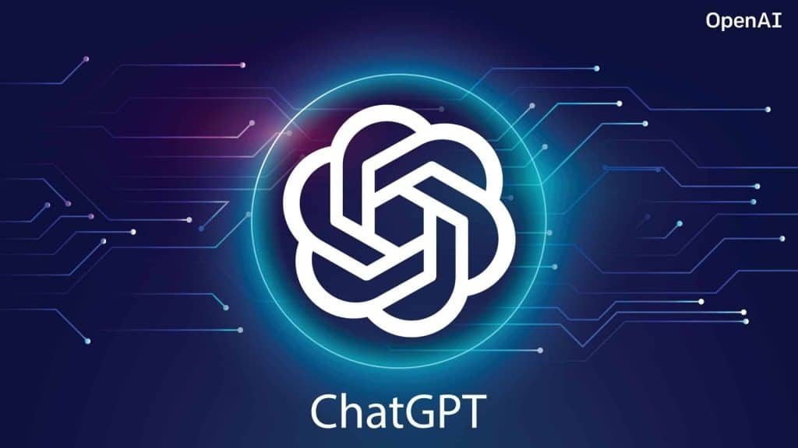

With ChatGPT 2.0, users can engage in natural and interactive conversations with the chatbot, making it feel more like a human-to-human interaction. The model has been trained on vast amounts of text data, enabling it to generate coherent and contextually relevant responses across a wide range of topics.

Discover the power of natural language processing and artificial intelligence as VoiceBotAI seamlessly understands your intentions, providing personalized and accurate responses.

The Currency Recognition Android Project is an innovative mobile application that leverages image processing and machine learning techniques to accurately identify and recognize various currencies. By utilizing advanced algorithms and trained models, this application provides users with the ability to determine the value and origin of different banknotes with ease.

It is an advanced methodology for detecting and diagnosing cancer by analyzing histopathological images. This innovative approach harnesses the power of Convolutional Neural Networks (CNN) to automate the identification of cancerous cells or tissue within these images, aiding in early detection and accurate diagnosis.

Churn Analysis holds paramount importance as acquiring new customers is consistently more challenging than retaining existing paying customers. To obtain actionable insights essential for Churn Analysis.

The Time Table Generator is a software application designed to automate the process of creating timetables for educational institutions, such as schools, colleges, and universities. It simplifies the task of scheduling classes, allocating teachers and rooms, and managing the overall timetable creation process.